ALDEIA
A Aldeia está a oeste da sua Fazenda. Apenas saia da sua fazenda para chegar lá. Na Aldeia há sete locais para visitar.
Para andar pela Aldeia apenas use o controle direcional do seu GameBoy e então aperte "A" quando você estiver em cima da loja que você quer entrar.
Para sair da loja aperte "B". Cada viagem a Aldeia levará uma hora do tempo do seu jogo, não importa quanto tempo você passe lá.
Floricultura
A primeira loja que você cruza é a Floricultura. Você comprará sementes que você precisa cultivar com Nina, que é dona da loja.
Cada estação ela terá diferentes tipos de sementes que você pode cultivar. Durante o Inverno ela terá diferentes tipos de sementes dependendo como você nomeou seu fazendeiro no começo do jogo. Veja a seção de Plantações do Inverno para mais detalhes.
| Primavera >> | Nabo >> | 120G |
| Primavera >> | 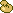Batata >> | 150G |
| Pri/Ve/Ou >> | Grama >> | 500G |
| Verão >> | Tomate >> | 200G |
| Verão >> | Milho >> | 300G |
| Outono >> | 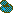Berinjela >> | 150G |
| Outono >> | Amendoim >> | 200G |
| Inverno >> | Cenoura >> | 300G |
| Inverno >> | Brócolis >> | 500G |
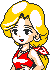
Bar do Suco
O Bar do Suco abre as 18/6pm e fecha a meia-noite. O bar é o único lugar da Aldeia onde você pode comprar liquido. Eve é dona do bar e ela venderá conjuntos de bebidas de suco de frutas para sua refeição.
Algumas de suas bebidas você consome na hora da compra, mas outras você leva para o seu inventário para sua refeição diária. Alguns das bebidas não estarão disponíveis até depois do evento "Presente do Suco".
 Suco de Laranja >> Suco de Laranja >> |
1 por 300G |
| 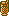Suco de Maçã >> | 1 por 500G |
| 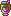Suco de Uva >> | 10 por 300G |
| Chá Verde >> | 10 por 200G |
| Leite >> | 10 por 100G |
Carpinteiro
Quando você estiver pronto para aumentar sua casa, visite o Carpinteiro na sua loja. Ele construirá uma grande casa por um preço.
Carpinteiro irá construir uma "Casa de Madeira De luxo" e depois uma "Super Casa de Madeira De luxo". Você não terá bastante madeira na sua fazenda para a casa Super-Deluxo no seu primeiro ano, mas ele também vende conjuntos de 50 madeiras.
| 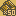Madeira >> | 500G >> | 50 peças |
| 1° expansão da casa >> | 2500G >> | Necessário 100 peças de madeira |
| 2° expansão da casa >> | 5000G >> | Necessário 300 peças de madeira |
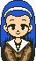
Igreja
Maria é responsável pela Igreja da Aldeia. Vá visitar ela durante o dia para ela contar sobre sua sorte e ore para a Deusa da Colheita. As vezes quando você ora, a Deusa da Colheita escutará você e faz uma visitação para abençoar sua vaca. É aleatório quando a Deusa irá aparecer;
Eu tive sua benção em uma de minhas vacas só no meu terceiro dia de fazendeiro e eu não tinha nenhuma vaca ainda.
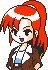
Loja de Ferramentas
Não tem muitos itens aqui para venda, mas Ann venderá a você equipamentos que te ajudam na fazenda. Ela também irá aprimorar seu regador (veja seção de Eventos) e depois estará disponível na loja para comprar.
No segundo ano ela terá a máquina de queijo e de manteiga para venda. Quando você compra todos os itens, a loja ficará vazia. Você ainda pode visitar ela, mas ela vai colocar você pra fora da loja com um "Te vejo depois".
| Borrifador >> | 2000G |
| 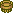Escova >> | 800G |
| Ordenhador >> | 1800G |
| 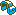Cela >> | 2500G |
| 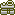Máquina de Queijo >> | 30000G |
| Máquina de Manteiga >> | 30000G |
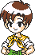
Restaurante
A dona do Restaurante é Ellen e ela vende comida pra você para recuperar sua stamina. A loja de Ellen está aberta das 8am as 18/6pm. O Bolo e o almoço são comsumidos depois da compra enquanto que os outros 3 são armazenados na sua fazenda.
| 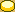Bolo >> | 1 por 300G |
| 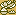Almoço >> | 1 por 500G |
| 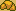Pão de Croissant >> | 10 por 300G |
| Bolinho de Arroz >> | 10 por 200G |
| 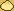Bolinho de Carne >> | 10 por 100G |
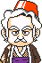
Loja dos Animais
Antes de você comprar animais, você tem que ter forragem armazenado no seu Silo. Quando você plantar grama e colhe-la, o dono da Loja permitirá que você compre animais. Quando você compra sua primeira vaca ele lhe dará de graça um sino para vacas que permite que você leve suas vacas para fora para um passeio em dias de sol.
Sempre que você vende uma animal a ele, ele repreende você pedindo que não faça novamente, mas você ainda pode continuar a fazer.
 Vaca >> Vaca >> |
5000G |
| 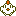Galinha >> | 500G |
| Ração para Vacas >> | 700G |
| Ração para Galinhas >> | 500G |
| 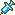Medicamento para Vacas >> | 1000G |
| Poção Milagrosa >> | 4000G |